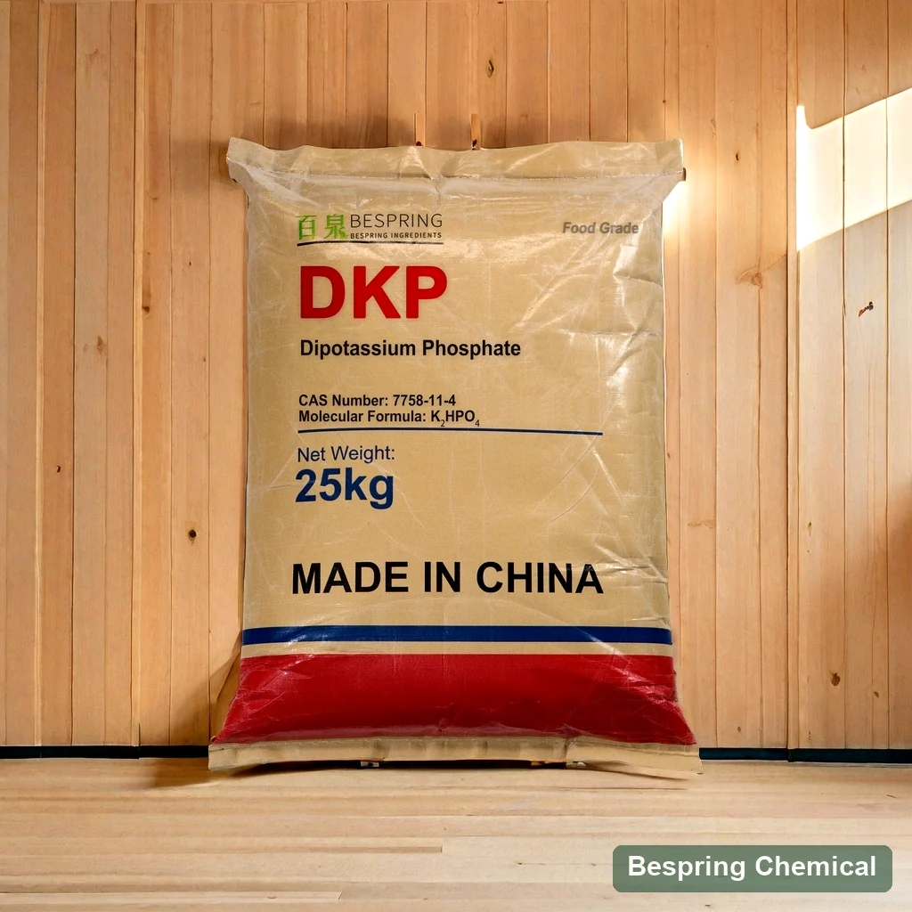
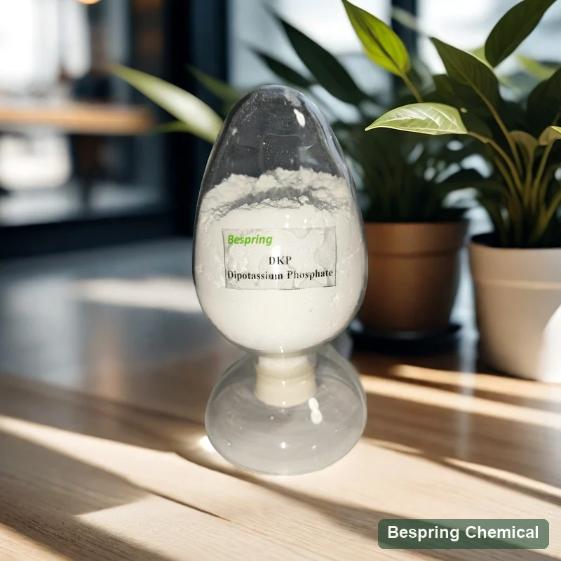
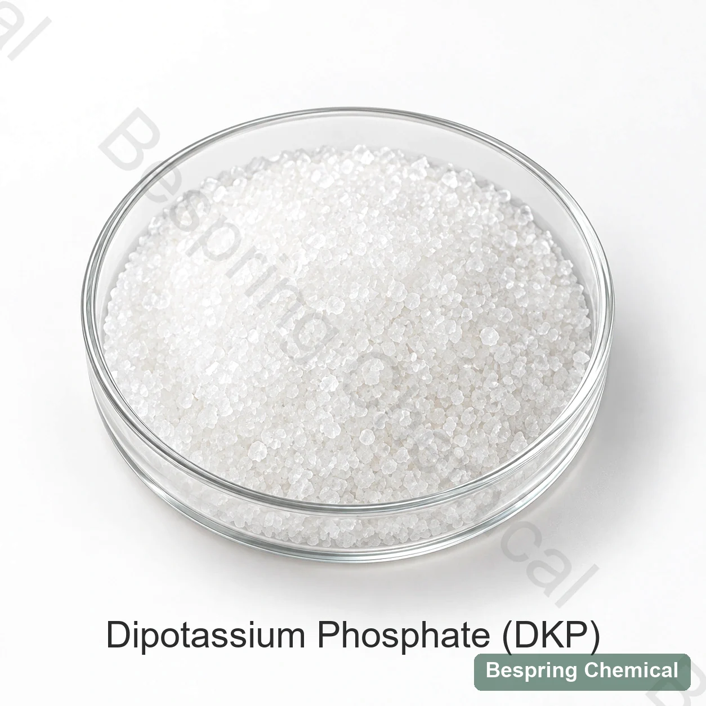

공급 능력
DKP는 정립 의존하는 창 내의 PH 운동을 저항할 수 있습니다. 처음 섞기 후에 가공하고 저장을 통해서 titratable 산도 및 PH를 측정하십시오.
분지 칼륨 직 인산염 · E340 (ii) / INS 340 (ii)
음식 급료 dipotassium 인산염 (DKP)는 완충기 대리인 및 sequestrant로 사용된 수용성 칼륨 orthophosphate입니다. 봄은 무수 K를 공급합니다2HPO4 식품 잔류 sourcing에 대한 여기에 설명 된 제품. 식품 표준, 불순 한계, 물리적 형태 및 응용 프로그램을 지정하여 제공 된 등급을 구입하기 전에 검토 할 수 있습니다.

제품 이미지 · 주문시 급료와 포장을 확인합니다
* 유효한 DKP 장에서 상업적인 참고 가치. 인용에 있는 제안 급료 명세, MOQ 및 선적 기간을 확인하십시오.
Anhydrous 정체성K₂HPO₄ · CAS 7758-11-4
해결책 PH 참고8.7–9.3; 테스트 기반 확인
Lead-limit 리뷰상업 대 JECFA 제한
공급 reference*25 kg; 22 MT/20' FCL
제품 정체성 및 식품 등급
Dipotassium 인산염은, 또한 dipotassium 수소 인산염, 칼륨 인산염 dibasic 또는 dibasic 칼륨 인산염이라고, K입니다2HPO4. 이 페이지는 무수 모양을 설명합니다: CAS 7758-11-4의 분자량 174.18 g/mol와 INS 340 (ii)/E340 (ii). JECFA DKP 모노 그래프 이 구성을 식별; 수화 된 형태는 자신의 정체성 및 사양을 요구합니다.
JECFA는 무색 또는 백색 과립, 결정 또는 대량 및 DKP는 deliquescent인 주의를 설명합니다. 그것은 완충 대리인, sequestrant 및 효모 음식 기능을 목록으로 만듭니다. 제안한 분말 또는 과립 모양 및 보장된 크기 배급으로 참고 이미지를 대우하기 보다는 입자 크기 필요조건을 확인하십시오. 음식 급료는 급료 문서에 의해 지원되어야 합니다; 동일한 화학 이름은 기술 비료 급료의 suitability를 설치하지 않습니다.
버퍼 구성 요소-Un universal pH 설정
인산염의 산·염기 균형, 농도, 초기 pH 및 다른 산이나 염이 전체 배합의 반응을 결정합니다. JECFA pH 참고값은 1 in 100 용액에서 8.7–9.3입니다. 이는 식별·순도 시험이며 최종 식품에 보장되는 pH 범위가 아닙니다.
DKP는 정립 의존하는 창 내의 PH 운동을 저항할 수 있습니다. 처음 섞기 후에 가공하고 저장을 통해서 titratable 산도 및 PH를 측정하십시오.
DKP는 칼륨과 인산염 둘 다 공급합니다. 증명한 분석실험 및 총 공식에서 성분적인 기여를 산출하십시오; 성분 존재에서 영양 주장을 infer하지 마십시오.
인산염은 녹는 칼슘 및 다른 무기물 equilibria를 바꿀 수 있습니다. 경도, 요새화 소금, 단백질 및 열은 명확성, 침수 및 짜임새를 교대할 수 있습니다.
DKP는 자유롭게 수용성 및 deliquescent의 수질, 추가 순서, 건조하중 습도, 강선 완전성 및 케이킹 통제가 자격이 있는 경우에 입니다.
단백질 음료는 체계 테스트를 요구합니다
버퍼 소금은 고온 가공 중에 pH와 미네랄 관리를 지원할 수 있지만 DKP는 모든 단백질 음료에 자동으로 유리하지 않습니다.
기록 MPC/MCC, whey 또는 식물 단백질 근원, 무기물 성분, 전열 역사 및 수화. Poor 단백질 수화는 DKP의 독립을 일으키는 원인이 될 수 있습니다.
수용성 및 총 무기물 측정. DKP는 casein-mineral equilibria를 변경할 수 있습니다; 과도한 붕괴는 micelles에서 점성 또는 방출 단백질 및 무기물을 대체할지도 모릅니다.
HTST, UHT 또는 재토 조건 및 재고 유효 기간을 통해 No-DKP 및 등급이 없는 DKP 통제를 비교하십시오. fouling, 응고, 앙금, 점성, 색깔 및 PH 편류를 추적하십시오.
무기물 맛, 입맛, 색상 및 라벨 포지셔닝을 안정성으로 확인하십시오. 기술적으로 안정적인 음료는 여전히 감각 또는 영양 요구 사항을 실패 할 수 있습니다.
증거 경계: .... 2024 다이리 과학 연구 저널 유단백 7.5%를 포함한 신선 액상 MCC/MPC 시스템에서 DKP 0과 0.15%(음료 질량 대비)를 비교했습니다. DKP는 가용성 단백질, 칼슘 및 인을 증가시켰지만, 해당 음료는 DKP 없이도 열안정성을 유지했습니다. 연구에는 HTST, 직접 증기 주입 UHT 및 냉장 보관이 포함되었습니다. 이 실험 수준은 권장 투입량, 법적 허용량 또는 모든 유제품·식물성 단백질 음료의 안정성을 입증하는 근거가 아닙니다.
상업적인 참고 및 시험 기초
이 상업적인 한계는 유효한 Bespring DKP 장에서 보존됩니다. 그들은 선택된 기준과 수락의 배치 결과 또는 증거가 아닙니다. 불순 한계는 본래 질량 기초에 mg/kg에서 표적으로 표현됩니다; 제안한 급료를 위한 표본 준비, 보고 기초 및 방법을 확인하십시오.
작은 화면에서, 자격 메모를 읽는 테이블을 swipe.
스와이프하거나 키보드를 사용하여 모든 열을 확인하십시오
| - 연혁 | 상업적인 reference* | 공급 능력 |
|---|---|---|
| K2HPO4 뚱 베어 | ≥98.0% | JECFA : 건조 후 ≥98.0%. 상업 시트는보고 기반을 주지 않습니다. 그것을 확인하고 분석실험 방법을 확인하십시오. |
| P2O5 | 39–42% | 원소 인이 아니라 P₂O₅로 표시합니다. 공급 상태 또는 건조·무수 기준과 분석 방법을 확인하세요. |
| pH | 8.7–9.3 | JECFA: 1 in 100 용액에서 8.7–9.3. 상업 규격의 용액 농도와 측정 온도는 기재되어 있지 않습니다. |
| 건조에 손실 | 105°C에서 ≤2.0% | JECFA: 105°C에서 4 h, ≤5%. 상업 규격에는 건조 시간이 없으므로 수치 한도만으로 동등성을 입증할 수 없습니다. |
| 불용성 사정 | ≤0.1% | JECFA: ≤0.2% 수용성 사정. 상업적인 분야가 동일한 시험 및 보고 기초를 이용한다는 것을 확인하십시오. |
| 제품정보 | ≤10 mg/kg | JECFA: 불화물으로 ≤10 mg/kg. 제안 급료 방법 및 배치 결과를 확인하십시오. |
| 언어: 영어 | ≤3 mg/kg | JECFA: 비소로 ≤3 mg/kg. 성분 특정한 테스트를 확인하십시오. |
| 제품정보 | ≤5 mg/kg | 참고 한계는 지도를 위한 JECFA의 ≤4 mg/kg를 초과합니다; 그것은 그 필요조건을 보장할 수 없습니다. |
| Pb로 중금속 | ≤20 mg/kg | “Pb” 필드를 집합; 그것은 별도의 리드 결과 또는 모든 개별 요소 제한이 충족되는 증거는 없습니다. |
| 카드뮴/mercury | 각 ≤1 mg/kg | 상업 분야; 목적지 제한 및 방법을 확인 |
상업적인 지도 한계는 ≤5 mg/kg이고, 인용된 JECFA monograph는 ≤4 mg/kg를 specifies. 이 다름은 각 배치가 실패한다는 것을 보여주지 않습니다, 그러나 상업적인 한계는 혼자 JECFA 필요조건을 보장할 수 없습니다. 선택된 기준에, 방법 및 실제적인 배치 COA 일치된 서명한 명세를 요구하십시오. ID 시험과 잔여 순수성 체크 뿐 아니라 여기에서 보이는 분야를 완료하십시오.
표준은 다를 수 있습니다. The 원래 2012 EU E340 (ii) 사양 텍스트 무수 기준 P₂O₅ 40.3–41.5%, 비소와 납 각각 ≤1 mg/kg를 제시합니다. 이는 위 상업 P₂O₅·비소·납 참고값보다 좁은 한도입니다. 특정 판의 비교이므로 EU 공급 승인 전에 현재 적용되는 통합본과 식품 범주 조건을 확인하세요.
인용된 monograph는 건조와 성분 별 한계 후에 분석실험을 포함하여 ID와 순수성 필요조건을, 제공합니다. 그것의 분석실험은 말린 표본의 산 기초 titration를 이용합니다.
DKP 모노 그래프를 엽니다.FDA 재고는 DKP 및 목록 유화제 소금, 영양 보충교재, PH 통제, sequestrant 및 안정제/두껍게 효력을 식별합니다.
FDA 입장을 검토미국 음식 사용을 위해, 21 CFR 182.6285 좋은 제조 연습에 따라 사용될 때 dipotassium 인산염을 안전한 인식하십시오. 이것은 모든 음식과 시장을 위한 제품 승인 또는 허가가 아닙니다. 기술적인 기능, 성분 순수성 및 허용한 사용은 따로따로 평가되어야 합니다.
산/기반 및 cation 균형에 의해 선정하십시오
이 orthophosphates는 동등한 무게 대용품이 아닙니다. molar 구성, 해결책 PH, 완충기 필요, 칼륨/sodium 표적 및 법적인 ID를 비교하십시오.
KH2PO4; 칼륨 인산염 완충기에 있는 acidic 협동자로 고려하십시오.
K2HPO4; dibasic 완충, 칼륨/인산염 및 무기물 통제 intent.
K3PO4; 더 높은 알칼리성은 분리된 PH 및 Sensory 자격을 요구합니다.
Na2HPO4; 나트륨/포타륨 기여 및 실제적인 완충기 성과 비교하십시오.
Bench-to-line 승인
무수 식품용 K₂HPO₄, CAS 7758-11-4, 목적지, 식품 범주 및 선택한 표준을 명시하세요.
분석실험 기초, PH 농도, 습기 방법, 불용성 및 성분 별 한계를 확인하십시오.
pH 응답과 완벽한 수식의 titratable 산성도를 측정, 뿐만 아니라 물.
일치 혼합, 난방 및 저장의 밑에 no-DKP와 graded-DKP 표본을 비교하십시오.
단백질 안정성, 침수, 점성, 무기물 균형, 맛, 색깔 및 영양 합계를 추적하십시오.
TDS, SDS, 대표 COA 및 많은 COA를 승인된 명세에 따라 요청하십시오. 입자 모양, 케이킹, 패킹 및 저장을 확인하십시오. 인증 또는 알레르기 / 자원 선언이 필요한 경우 제공된 급료 및 관련 사이트에 대한 가용성 및 범위를 확인하십시오.
외관과 저장 참고
유효한 DKP 장은 25 kg 부대, 500 kg MOQ 및 22 MT/20' FCL 선적 참고를 목록으로 만듭니다. 이 기간, 강선, 깔판 및 실제적인 짐 계획을 인용하십시오. 차갑고, 건조한, 송풍한 장소에 있는 상점은 햇빛, 열 및 습도에서 멀리 둡니다; 장은 30°C를 초과하지 않는 저장 온도를 지정합니다. 팩을 제한하는 습기 통풍구를 지키십시오. 제안 급료 문서에서 오프닝 후에 재고 유효 기간 그리고 취급을 확인하십시오.



구매자 질문
이 페이지는 인산수소이칼륨이라고도 하는 무수 인산이칼륨 K₂HPO₄, CAS 7758-11-4를 설명합니다. JECFA는 완충, 금속이온 봉쇄 및 효모 영양 기능을 기재합니다. 식품 표준, 물리적 형태 및 허용 용도는 등급·시장별 검토가 필요하며 수화물이나 산업용 등급이 자동으로 동등한 것은 아닙니다.
아닙니다. 납 한도는 ≤5 mg/kg로 인용된 JECFA의 ≤4 mg/kg와 다릅니다. 개별 배치는 더 낮을 수 있지만 적합한 서명 규격서, 확인된 시험법 및 배치 COA가 필요합니다. 함량 표시 기준, pH 용액 농도 및 건조 시간도 확인해야 합니다.
아닙니다. JECFA는 1 in 100 용액에 대해 그 범위를 제시합니다. 최종 식품의 반응은 농도, 다른 산·염 및 전체 배합에 따라 달라집니다. 실제 공정·보관 조건에서 pH와 적정산도를 측정하세요.
아닙니다. 단백질 공급원, 수화, 가용성 미네랄, 칼슘, pH, 열처리 및 보관이 모두 중요합니다. 후보 등급을 DKP 무첨가 대조군과 비교하세요. 한 유단백 시스템의 결과가 식물성 단백질 음료나 다른 보관기간 설계 공정에서도 재현된다는 뜻은 아닙니다.
DKP는 이염기성 K₂HPO₄이며 MKP는 더 산성인 KH₂PO₄입니다. 칼륨 대 인산염 비율, 용액 pH 및 완충 거동이 다릅니다. 같은 중량으로 대체하지 말고 배합과 허용 용도에 따라 선택하세요.
무수한 음식 급료, 목적지 및 음식 기준, 분석실험 기초, 긴요한 불순 한계, 육체적인 모양, 신청 및 과정, 양, 포장 및 납품 조건을 제공하십시오. 목록은 TDS, SDS, COA 및 선언을 요구했습니다. 실제적인 제안에 있는 상업적인 기간 그리고 어떤 증명서 범위든지 확인하십시오.
2026-10-04 · 기술 참조 : FAO / WHO JECFA, 미국 FDA / eCFR, 인용 EU 사양 버전 및 낙농장 연구.
Continue formulation 자격
pH, 미네랄, 선명도, 단백질, 열처리 및 센서 대상을 검토하십시오. 낙농장 및 플랜트-Beverage phosphate 심사 가이드 시험 계획.
칼슘, casein, 열, 전단 및 냉각을 가진 인산염 선택 연결하십시오.
버퍼 범위와 미네랄 응답이 균형 잡히는 정의 된 혼합을 평가합니다.
정립 주도 sourcing
인용 및 제안 급료 문서를 요구하십시오. 표적 음식 기준, 완충기 필요조건 및 과정을 공유하십시오 그래서 급료는 당신의 명세 및 정립에 대하여 검토될 수 있습니다.
당신의 급료 및 목적지 시장을 말하십시오 그래서 우리는 당신의 순서를 위해 어떤 문서가 유효하다는 것을 확인할 수 있습니다.
외부 참조는 일괄 인증서 또는 Bespring 제품 사양이 아닙니다.